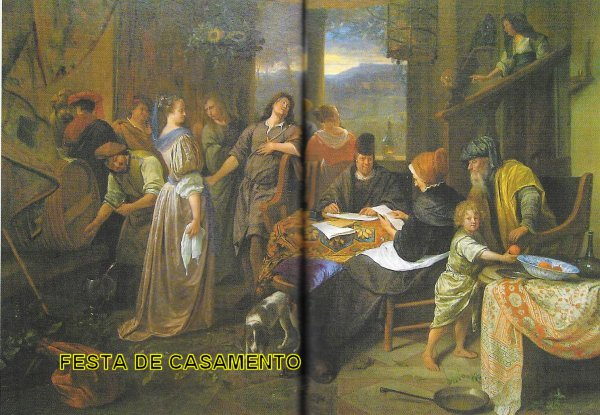

PREFÁCIO

DEUS misericórdia infinita que só é amor e bondade, se compadeceu de duas famílias que eram fieis e sempre buscavam corresponder ao Amor Divino. O remédio eficaz e poderoso que o SENHOR escolheu para solucionar os problemas que existiam, foi enviar o seu emissário Arcanjo São Rafael, que revelou com sua longa permanência de quatro anos vivendo como homem no meio da humanidade, a imensidão do Amor Divino por todos nós. O nome do Arcanjo São Rafael significa em hebraico "Medicina de DEUS", que enquadra perfeitamente no trabalho que Ele recebeu, para solucionar aquelas questões importantíssimas que envolviam as duas famílias religiosas, a fim de torná-las mais fortes, unidas e verdadeiramente fieis.
A história descreve acontecimentos de personagens que estavam ligados por laços de parentesco: Tobit o pai, a sua esposa Ana, o filho Tobias, que moravam em Nínive, na Assíria; o parente Raguel com sua esposa Edna e a filha Sara, que moravam em Ecbátana, na Média; e o parente Gabael que também morava na Média, em Rages. Estes são os personagens principais. E a missão consistia em encontrar o remédio para curar a cegueira de Tobit, trazer o dinheiro que ele havia deixado na Média com Gabael, e na mesma oportunidade, realizar o casamento de Tobias com Sara, filha do parente Raguel, afugentando o terrível demônio Asmodeu que se apoderara da moça.
A beleza da história e o manancial de ensinamentos para a vida são incontestáveis, e nós do APOSTOLADO DOS SAGRADOS CORAÇÕES, depois de muitas pesquisas, construímos este Site, pensando, sobretudo, na possibilidade dele ajudar muitos casais, que consigam vislumbrar no surgimento cotidiano de desajustes e das fraturas na harmonia do lar, a presença do maligno que entra pelos orifícios e fendas, enfraquecendo a estrutura do amor de ambos, e querendo destruir a felicidade conjugal e até o matrimônio. E assim, por certo, as pessoas de um modo geral, poderão encontrar ao longo desta preciosa e verdadeira história, sugestões concretas para a vida, para um viver honesto e consagrado a DEUS, por tudo que ELE nos proporciona, e felicidade de todos nós. Com o mais fervoroso augúrio, desejamos que o assunto seja agradável a todos e proporcione alegria e bem-estar.
APOSTOLADO DOS SAGRADOS CORAÇÕES
http://www.apostoladosagradoscoracoes.com/